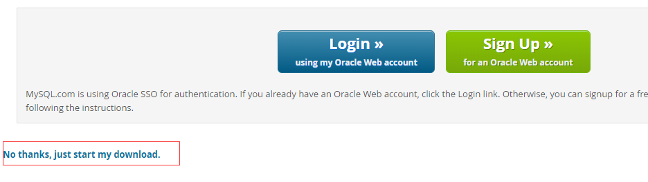
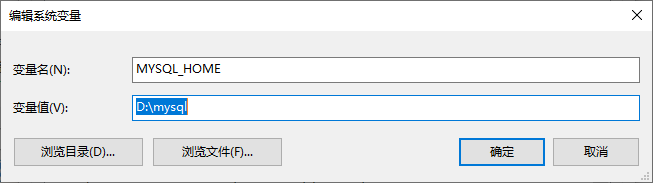

Windows 上安装 MySQL
Windows 上安装 MySQL 相对来说会较为简单，最新版本可以在 MySQL 下载 中下载中查看(更详细安装：Windows 上安装 MySQL)。

点击 Download 按钮进入下载页面，点击下图中的 No thanks, just start my download. 就可立即下载：

下载完后，解压完成后为以下样子（我将安装文件放在 D:\mysql 中）：

接下来我们需要配置下 MySQL 的配置文件
打开刚刚解压的文件夹 D:\mysql ，在该文件夹下创建 my.ini 配置文件，编辑 my.ini 配置以下基本信息：
1 | [client] |
接下来我们来启动下 MySQL 数据库：
以管理员身份打开 cmd 命令行工具，切换目录：
1 | $ cd C:\web\mysql-8.0.11\bin |
初始化数据库：
1 | $ mysqld --initialize --console |
注意：这个可能会报错：
mysqld : 无法将“mysqld”项识别为 cmdlet、函数、脚本文件或可运行程序的名称。请检查名称的拼写，如果包括路径，请确保路径正确，然后再试一次。
解决办法有两个：1、在命令前面加上 ./ 如：$ ./mysqld --initialize --console
2、配置 mysql 环境变量
执行完成后，会输出 root 用户的初始默认密码，如：
1 | ... |
<!wbLjV?/3uq 就是初始密码，后续登录需要用到，你也可以在登陆后修改密码。
输入以下安装命令：
1 | $ mysqld install |
启动输入以下命令即可：
1 | $ net start mysql |
登录 MySQL
当 MySQL 服务已经运行时, 我们可以通过 MySQL 自带的客户端工具登录到 MySQL 数据库中, 首先打开命令提示符, 输入以下格式的命名:
1 | $ mysql -h 主机名 -u 用户名 -p |
参数说明：
- -h : 指定客户端所要登录的 MySQL 主机名, 登录本机(localhost 或 127.0.0.1)该参数可以省略;
- -u : 登录的用户名;
- -p : 告诉服务器将会使用一个密码来登录, 如果所要登录的用户名密码为空, 可以忽略此选项。
如果我们要登录本机的 MySQL 数据库，只需要输入以下命令即可：
1 | $ mysql -u root -p |
按回车确认, 如果安装正确且 MySQL 正在运行, 会得到以下响应:
1 | $ Enter password: |
若密码存在, 输入密码登录, 不存在则直接按回车登录。登录成功后你将会看到 Welcome to the MySQL monitor… 的提示语。
然后命令提示符会一直以 mysq> 加一个闪烁的光标等待命令的输入, 输入 exit 或 quit 退出登录。
配置 mysql 环境变量
上面安装的是时候我们看到mysql默认安装路径是：D:\mysql 我的电脑右键—>属性—>高级系统设置—>环境变量—>新建MYSQL_HOME,将安装目录输入：

找到path编辑：输入%MYSQL_HOME%\bin
打开 cmd 输入 mysql 检测一下
在 navicat for mysql 上链接 mysql
navicat for mysql 下载 安装完成后运行 navicat
客户端使用 navicat for mysql。本地安装了mysql 8.0。但是在链接的时候提示：
解决方法：
这行代码有两层含义，第一:修改root的密码为’root’，摒弃原来的旧密码。第二：使用mysql_native_password对新密码进行编码。
1 | $ ALTER USER 'root'@'localhost' IDENTIFIED WITH mysql_native_password BY 'root'; |
详情报错信息请看 navicat for mysql 链接时报错：1251…